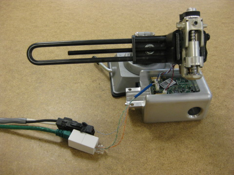

This test is for a gripper motor and ballscrew assembly only.
Plug the power and etherCAT cable from the test stand into the cable coming off from the gripper board.

Mount the motor and ballscrew assembly into the clamp in the table. Tilt the clamp about 30 degrees from horizontal. Move the gripper board underneath and carefully plug the encoder and power cable into the gripper board. Do not clame the moving ballscrew assembly. Clamp the case only.
Do not interfere with the gripper when it is calibrating, as it may cause the gripper to set its zero position early. Touching the gripper may cause it to fail its test.
Press 'Continue' to proceed.